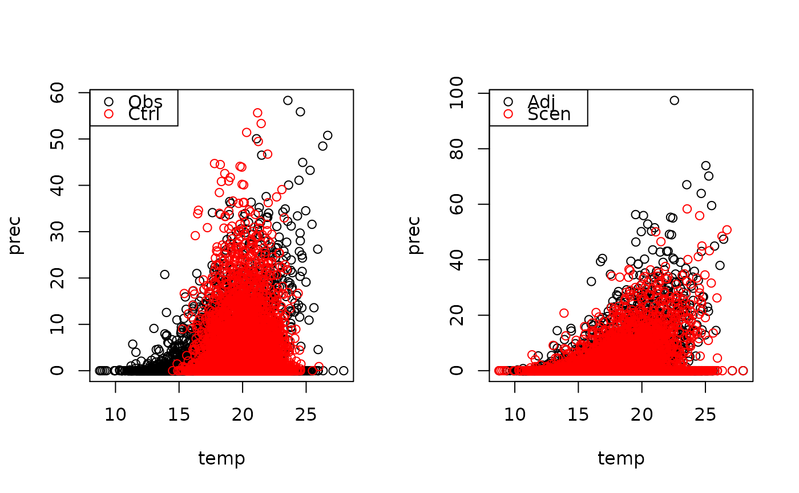

A wrapper function for a copula-based bias correction method of temperature and precipitation
biasco2D( obs.in, ctrl.in, scen.in, names = NULL, cond = "P", separate = F, threshold = 0.1, jittering = F, fit.skew = F, ... )
| obs.in | Either a 2-column array, matrix or data.frame. of observed temperature and precipitation |
|---|---|
| ctrl.in | Data used to calibrate the method given in the format as |
| scen.in | Data for the scenario period simulation given in the format as |
| names | names of the variables at different columns |
| cond | The conditioning order of temperature and precipitation. If |
| threshold | Threshold for wet day precipitation. Everything below |
| ... | Method-specific parameters to be implemented |
An object of type BiascoTimeSeriesPT which contains a matrix of bias adjusted temperature and precipitation and also additional information on the used parameter values
#> #>#> #> #>#> Warning: data set ‘model_data’ not found#>#>#>#> [1] "P"#Visualise the results: par(mfrow=c(1,2)) plot(varsO) points(varsC,col="red") legend("topleft",c("Obs","Ctrl"),col=c("black","red"),pch=c(1,1)) plot(dat(adj(biasco2d.object)))